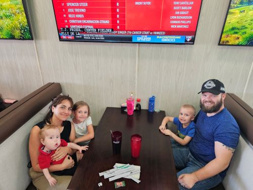
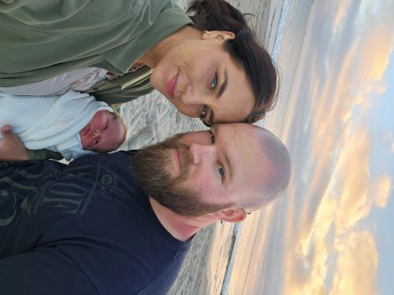
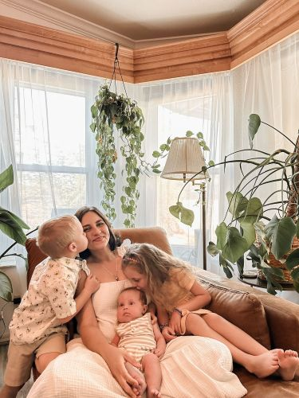
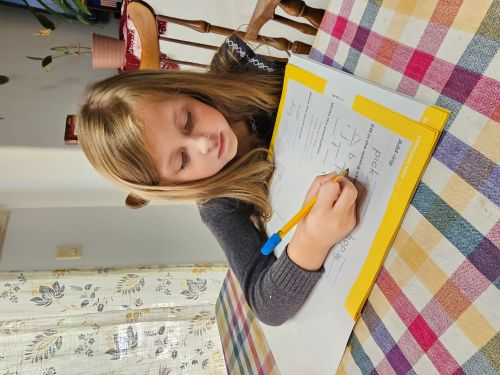
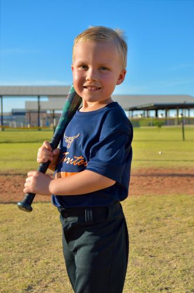
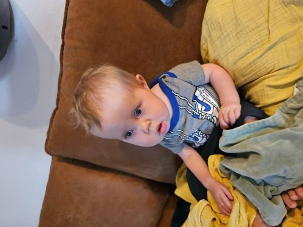

This is my wife Sara. We were married in August of 2018 and are blessed to have found each other. She is originally from Colima, Mexico and now lives with me in Yuma, AZ. She loves plants and is a dedicated mother and wife. She has a bit of a temper, but it only shows how much she cares about all of us. Her birthday is close to Christmas, which is her favorite holiday, and she has a thing for redecorating. She is on her way to becoming quite popular on TikTok and has even had sponsors from TikTok send her free samples to try and post about. She was raised as a country girl and lived in Mexico for most of her life before moving the the USA with a permanent residency when she was 17.


This is my oldest child and only daughter Rose. She loves to do anything there is to do. She performs in ballet, takes swimming lessons and horse riding lessons, and is even involved in violin lessons. She is a beam of light in a darkening world. She is always happy and smiling everywhere we go. She gets sad mostly when we are finished doing whatever it is we were doing, but she bounces back quickly. She is the one who made me a dad and showed me a part of myself I never knew. She was born in 2018 and is continuing to grow faster than I would like.

This is my oldest son Nick. He is a wild child if I've ever seen one. He acts just like I did at that age which makes my mom say it's payback for how I was. He is a sweetheart with way too much energy. He was born in 2020 and is growing very quickly. He played in T-Ball and performed very well and is always trying to find something to do. He has had a couple accidents so far that left a scar above his left eye and another on his lower lip, but he keeps on going. He loves to play outside and ride his bicycle everywhere he can. He tends to get into things he's not supposed to no matter how many times he gets in trouble for it, but he is always quick to help when he knows someone is hurt or sick.

This is my youngest child Harold. He was born in 2024 and came with a few concerns. While we were excited to welcome him into the world, it was clear something was wrong when he was born. He had a large purple and red stain across his back and legs as well as one leg that was about twice the size of the other. Over the next few months we discovered he has a very rare medical condition that has a long medical term but can be shortened to MCAP. MCAP is a genetic mutation that causes an overgrowth in the body. His right leg and right side of his head are affected by this overgrowth. His brain is also affected, which is where a lot of the medical trouble comes in. He has several other medical conditions that stem from his disorder, but he still has all of the energy and excitement as any other kid his age. He may be slow to develop, but for him life is just beginning and there is a long way to go.